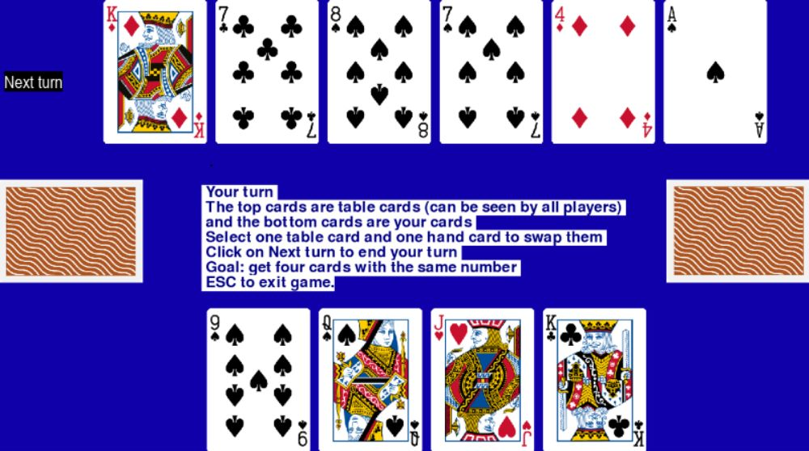

Rules
The game is played with a single deck of Poker cards without jokers, yielding 52 cards. In our version, three people play the game.At the beginning of the game, each player receives four cards, which only that player can see, henceforth called hand cards. Additionally, 6 cards are displayed face up for all players to see, henceforth called table cards. The goal of the game is to collect four-of-a-kind as often as possible. An example of the game can be seen below:

Once all swapping has taken place, it is the next player's turn.
Once a player has collected all four-of-a-kind, they collected a Kemps! and gain a point.